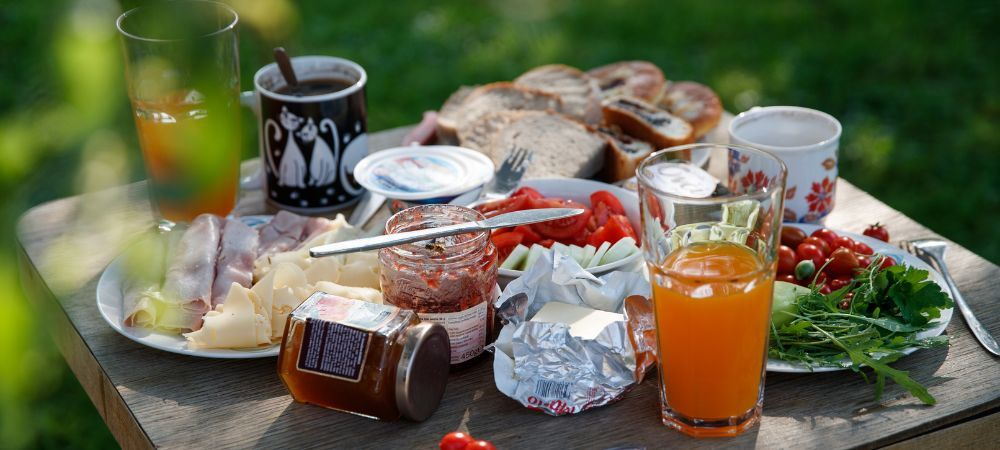
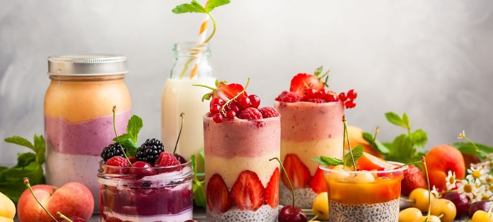

News
Tasty Tales Food and Drink Blog
Tasty Tales Food and Drink Blog
Recipes
Cooking techniques
Food safety
Nutrition
Culinary trends
Recipes
Recipes
Baking recipes
Easy weeknight dinners
Healthy meal ideas
International cuisines
Dessert recipes
Cooking techniques
Cooking techniques
Grilling tips
Baking methods
Sauteing techniques
Slow cooking
Sous vide cooking
Food safety
Food safety
Proper food storage
Safe cooking temperatures
Crosscontamination prevention
Allergen awareness
Hygiene practices
Guides
Guides
Nutrition
Macronutrients vs micronutrients
Dietary guidelines
Superfoods
Meal planning tips
Nutritional supplements
About Us
Tasty Tales
What is the healthiest type of cooking oil?
May 14, 2024
When it comes to cooking oils, there are many options out there.. Some people may think that all oils are unhealthy, but that is not necessarily true.
What is kombucha and how is it made?
May 14, 2024
So, you're wondering about how to keep and serve kombucha properly, huh?. Well, let me tell ya, it's pretty important if you want to enjoy all the benefits of this funky fermented tea.
What is the difference between white and whole wheat bread?
May 14, 2024
When it comes to white and whole wheat bread, there are some key differences to take into account.. Firstly, white bread is made from refined flour which means that the bran and germ have been removed during processing.
How to create mouthwatering cocktails at home with just a few simple ingredients
May 14, 2024
So, you wanna try your hand at making some bomb cocktails at home, huh?. Well, lemme tell ya, it ain't as hard as it seems!

Discover the secret to baking the perfect chocolate chip cookies every time
May 14, 2024
So you wanna make some bomb chocolate chip cookies, huh?. Well let me tell you, the key to keeping them fresh and tasty is to make sure you cool 'em down properly after baking.
Learn how to make restaurant-quality sushi in your own kitchen with this easy step-by-step guide
May 14, 2024
Making sushi at home can be a fun and rewarding experience, but it's not always smooth sailing.. There are common issues that can arise when trying to recreate restaurant-quality sushi in your own kitchen.
One of the most frustrating problems is rice that is too sticky or too dry.

The latest food trends and popular dishes
May 14, 2024
Man, have you seen the latest food trends?. It's crazy how consumers are reacting to all these changes in the industry.
Healthy eating tips and recipes
May 14, 2024
When it comes to eating healthy while dining out or traveling, it can be challenging for many people.. However, there are some strategies that can help you maintain a balanced diet even when you're not at home.
One tip is to choose restaurants that offer healthy options on their menu, such as salads, grilled fish, or steamed vegetables.
Restaurant reviews and recommendations
May 14, 2024
Overall, I gotta say this restaurant ain't worth the hype.. The food was mediocre at best and the service was downright terrible.